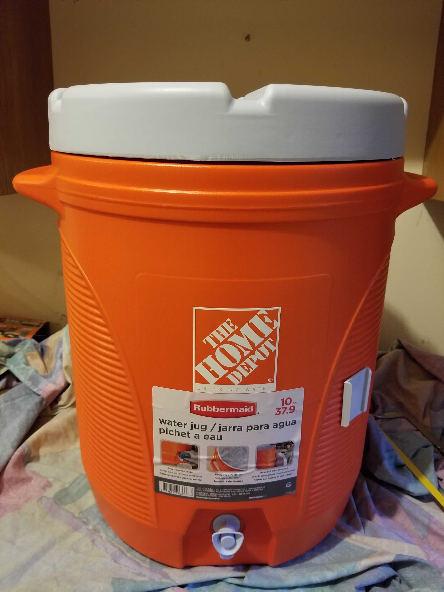
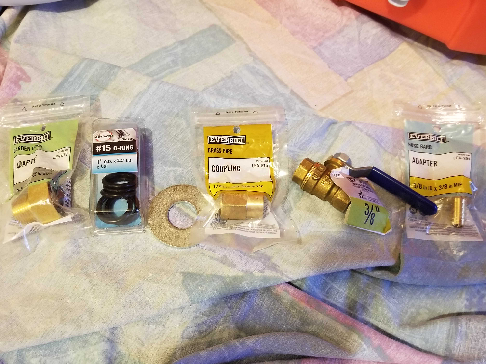
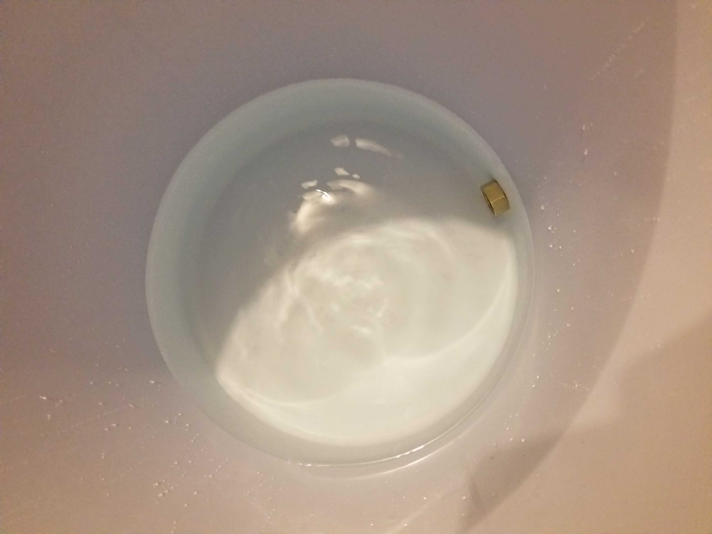
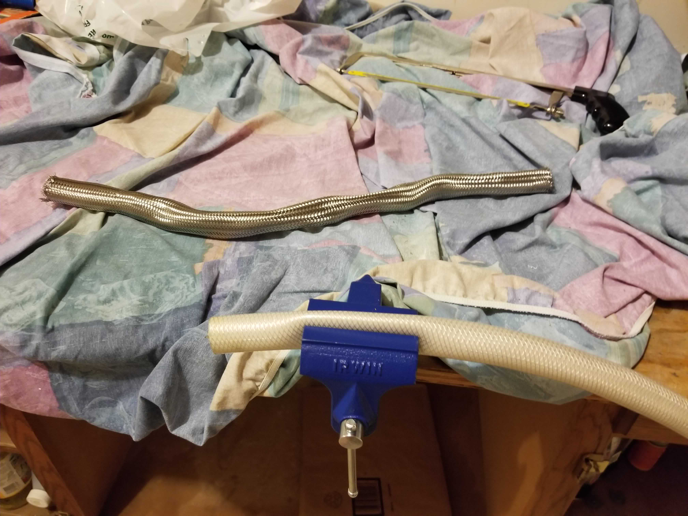
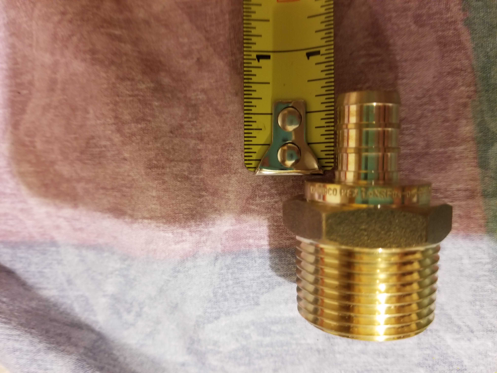
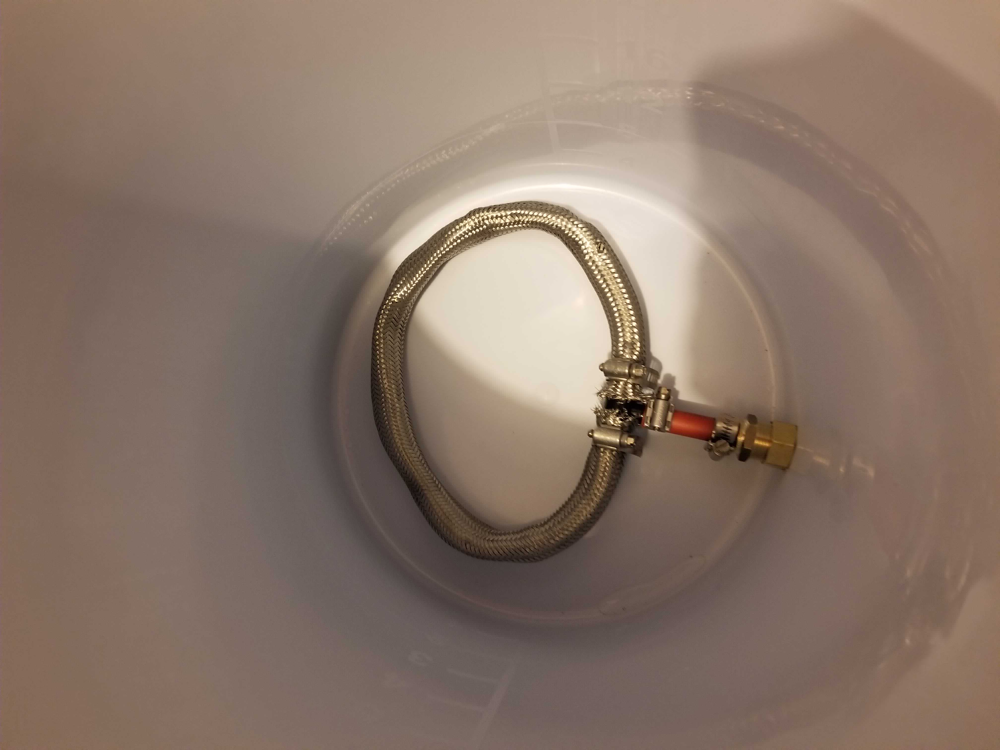

I’ve been wanting to get into all grain brewing for a bit, but have been missing some key equipment. The largest piece missing is the mash tun.
Why All Grain
There’s a few reasons I’m interested in all grain brewing:
Recipes
Many recipes found online or in books come in all grain form, less so with extract. All grain recipes by-and-large can be converted to extract, but it isn’t ever going to be 1:1.
Brewing from Scratch
All grain just lets the brewer have more control of the final beer. When brewing with extract you essentially are borrowing a brewery’s wort. There isn’t anything wrong with that, the wort that comes out of the extract is good, but brewing an all grain recipe lets the brewer really say they brewed from scratch. It’s the difference between a cake from a box and a cake from first principals.
Why not?
Its just cool! It adds a lot more time to the brew day, but it’s pretty cool to say this beer is really from scratch.
The Mash Tun
For other new brewers out there, a mash tun is a vessel designed to hold the mash when brewing all-grain beer recipes . The tun is intended to hold a fairly constant temperature over the course of the mash schedule, which is generally between 30 to 60 minutes.
The other key feature of the tun is that is has a false bottom or filter system. This is used to separate the wort from the grain in the final mashing step of lautering.
A mash tun can come in many forms, and really a brewer just needs a tun to match the style of sparging they’ll be using. In this case the tun will be designed with batch sparging in mind.
Batch Sparging
Batch sparging is a simple sparge method that is just a few steps. First, the wort is completely drained from the mash into the boil kettle. Next, the tun is refilled at the same temperature as the original mash. This is held for several minutes to allow the grain bed to re-settle. Once settled the tun is drained again.
A Batch Mash Tun
This mash tun design is taken straight out of How to Brew by John Palmer, with only a few parts tweaked based on what was available at my hardware store. Anything that looks a little weird can be blamed on me.
It needs to be emphasized that the part list here, or any other list found online, should be taken as a super loose guideline. None of this is set in stone and whatever is easiest to find, buy, and build is probably right for you.
The basic components of the tun are:
- the actual vessel
- a bulkhead fitting, to drain the wort
- a filter to keep the grain bed in the vessel
The vessel is pretty simple, beverage coolers that can be found at most hardware stores work well. Additionally, they have a spigot that is trivial to replace with the bulkhead fitting.

Required Tools
This implementation also requires very few tools, just a hack saw and a vice grip.
Also keep in mind the cleanliness of the workspace, I just threw a cloth over the bench just in case.
The Bulkhead Fitting
The bulkhead fitting is the first thing you’ll want to build. While the filter may change based on sparging experience or different methodologies, the bulkhead will remain mostly static. The main components are garden hose adapters to attach the fitting to the vessel, a ball valve, and a barb for a hose.
The first step is to remove the plastic spigot from the beverage cooler, this fitting will be taking its place.
Parts
Again, the parts here can change based on whats available at the store and the vessel used. Keep in mind that the barb is for brewing hoses, so that just needs to match your equipment.

- Plumber’s tape, for the brass fittings
- A 3/4" to 1/2" garden hose adapter
- An O-Ring (or 2 in my case)
- A washer or spacer
- A 1/2" to 3/8" brass coupling
- A 3/8" ball valve
- A 3/8" hose barb
These are essentially connected in line top-to-bottom in the list. The only pieces to separate are the first two in the list, which will be on the inside of the vessel with the 1/2" end sticking through.
Next attach the spacer and coupling. The spacer may need to be trimmed down to fit the space where the spigot was (used the hack saw for this). In my case an extra o-ring between vessel wall and spacer helped to keep this water tight.
Now attach the hose barb and the coupling to the ball valve (don’t forget some tape on the threads).
Finally, attach this ball valve fitting to the adapter on the vessel.
With the fitting complete we just need to confirm that the vessel is still water tight. Fill the vessel over the adapter and spigot hole and let it sit for at least 20 minutes, keeping an eye out for any water draining.

The Filter
The filter for this tun is going to be a circular stainless steel braid attached to the adapter. The mesh will be taken off a hot water heater hose, which has a tightly woven steel mesh. This will be attached to a PEX tee which will be connected to the adapter.
The Parts

The parts of the filter are:
- A stainless steel braid, taken from a hot water heater hose
- A PEX tee, with 1/2" end on one side
- A PEX adapter, 1/2" PEX to 3/4" male adapter
- The shortest amount of 1/2" PEX hose you can find
- 4 hose clamps
The Braid
Getting the steel braid off the hot water heater hose is a pain. To do this will require both the vice and the hacksaw.
The ends of the hose need to be removed so that the braid can be removed from the rubber inside. First, cut the ends off with the hacksaw.
Next, work the hose around to loosen up the braid and start separating it from the rubber inside. This can take a bit, I found that kinking the hose helped. Once some of the rubber hose is exposed just drop it back in the vice and tug.

The Adapter
Next step is to build an adapter with our PEX parts that can attach to the bulkhead fitting. This uses the PEX tee, the PEX adapter, the PEX hose, and two of the clamps.
PEX is used here due to the availability of parts, as well as the price tag. I had never worked with PEX prior to this mash tun, but it is a pretty interesting product for plumbing and, from what I’ve read and seen, easy to work with.
Assembly is straight forward. First the hose needs to be cut to length. This doesn’t need to be perfect or a specific length, it simply needs to be able to house both the PEX tee and PEX adapter ends that will be inside the hose.

Now, just attach the tee and adapter to the hose using the two clamps. Typically PEX is attached by crimping the fitting to the hose, but the clamps still attach the fittings tightly without requiring a purchase or rental of a potentially expensive crimper. Plus, if you want to reuse those fittings later its easy to pull the clamps off.
You likely will need to attach the tee to the hose after attaching the PEX adapter to the garden hose adapter due to space constraints in the tun - I did anyway.
Alright, after that all that is left to do is attach the braid to the tee. This will need to be done after the PEX fittings above are attached to the bulkhead, otherwise it will be impossible to attach the PEX adapter to the garden hose.

And it’s done! I just did one last check that everything was still water tight to call it a night.
Time to Brew
With the mash tun done its time to have a beer and start looking at all grain recipes.